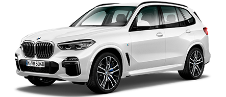
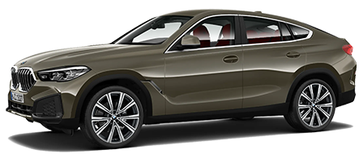
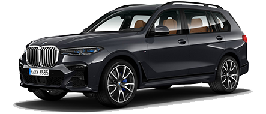

Новые модели

BMW X5
Новый BMW X5 прибавил в габаритах по сравнению с предшественником, сохранив гармоничные пропорции, и самое главное – свой неповторимый характер. Дизайн стал более атлетичным, со сглаженными поверхностями и утонченными линиями.

BMW X6
Привлекающий внимание: чтобы выделиться из толпы, новому BMW X6 можно даже не начинать движение. Он делает это, стоя на месте: благодаря впечатляющим пропорциям и выразительному дизайну

BMW X7
В режиме дальнего света лазерные фары с уникальными Х-образными элементами освещают дорогу на расстояние до 600 метров, что почти вдвое дальше, чем обычные фары.